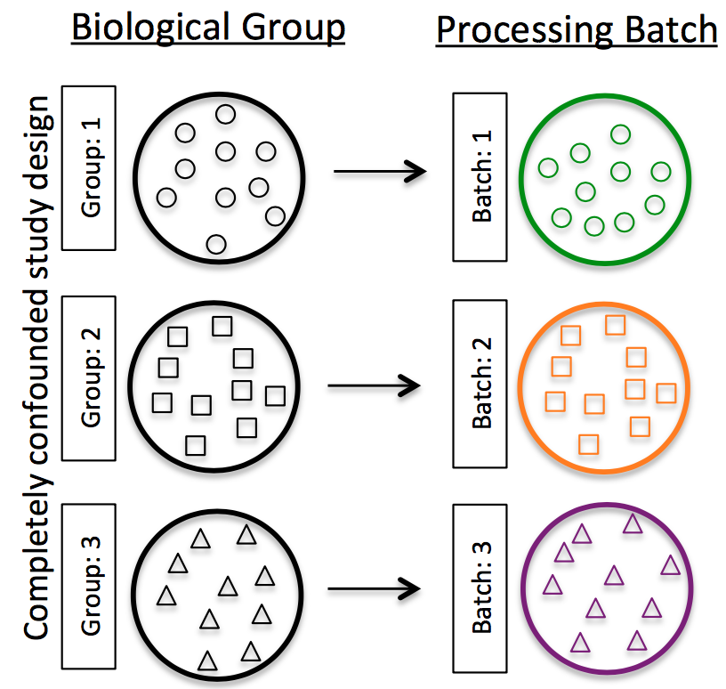

![]()
Experimental design
- Number and type of replicates
- Avoiding confounding factors
- Addressing batch effects
Replicates
- Technical replicates: use the same biological sample to repeat the technical or experimental steps in order to accurately measure technical variation and remove it during analysis.
- Biological replicates: use different biological samples of the same condition to measure the biological variation between samples.

- With the current RNA-seq technologies, technical variation is minimal, so technical replicates are generally not necessary.
- In contrast, biological variation can be substantial, so biological replicates are essential for robust statistical analysis.
- For differential expression analysis, the more biological replicates, the better the estimates of biological variation and the more precise our estimates of the mean expression levels.
- Biological replicates are of greater importance than sequencing depth

- General gene-level differntial expression:
- 30M reads per sample for single-end reads
- 15M reads per sample if replicates >=3
- Length of reads: >=50-100bp
- lowly expressed gene-level differntial expression:
- 30-60M reads
- Length of reads: >=50bp
- Isoform-level differntial expression:
- Known isoforms, at least >=30M reads per sample and paired-end reads
- Novel isoforms, at least >=60M reads per sample and paired-end reads
- Length of reads: >=50bp paired-end reads
Confounding
A confounded RNA-seq experiment is one where you cannot distinguish the separate effects of two different sources of variation in the data.
For example, we know that sex has large effects on gene expression, and if all of our control mice were female and all of the treatment mice were male, then our treatment effect would be confounded by sex. We could not differentiate the effect of treatment from the effect of sex.

To AVOID confounding:
Ensure animals in each condition are all the same sex, age, litter, and batch, if possible.
If not possible, then ensure to split the animals equally between conditions

Batch effects
Batch effects are a significant issue for RNA-seq analyses, since you can see significant differences in expression due solely to the batch effect.

How to know whether you have batches?
Were all RNA isolations performed on the same day?
Were all library preparations performed on the same day?
Did the same person perform the RNA isolation/library preparation for all samples?
Did you use the same reagents for all samples?
Did you perform the RNA isolation/library preparation in the same location?
If any of the answers is ‘No’, then you have batches.
Best practices regarding batches:
Design the experiment in a way to avoid batches, if possible.
If unable to avoid batches:
- Do NOT confound your experiment by batch:

DO split replicates of the different sample groups across batches. The more replicates, the better (definitely more than 2).

DO include batch information in your experimental metadata. During the analysis, we can regress out the variation due to batch if not confounded so it doesn’t affect our results – if we have that information.

Overall Workflow
- Sequencing depth: total number of reads sequenced for a sample
- Read length: number of base pairs in each read
- Coverage: average number of reads that align to, or “cover,” each base in a reference sequence

1. RNA extraction and library preparation
- Enriching for RNA: DNAse to remove any contaminating DNA -> rRNA depletion or polyA selection.
- Generally, ribosomal RNA represents the majority of the RNAs present in a cell, while messenger RNAs represent a small percentage of total RNA (~2% in humans).
- Therefore, if we want to study the protein-coding genes, we need to enrich for mRNA or deplete the rRNA.
- For differential gene expression analysis, it is best to enrich for Poly(A)+, unless you are aiming to obtain information about long non-coding RNAs, in which case ribosomal RNA depletion is recommended.
- RNA quality check: check for the RNA integrity prior to starting the cDNA library preparation.
- Inspection of the ribosomal RNA bands via gel electrophoresis
- Agilent Bioanalyzer -> RIN (RNA Integrity Number) -> provides a means by which RNA quality from different sources can be compared.
- Fragmentation and size selection
- Chemical, enzymatic (e.g., RNAses), or physical process
- Size selection to retain only those fragments that Illumina sequencing machines can handle
- ~150-300bp
- Reverse transcribe RNA into double-stranded cDNA
- Most commonly used method incorporates deoxy-UTP (dUTP) during second strand synthesis
- Add sequence adapters to the ends of the cDNA fragments
- PCR amplification
- Run as few amplication cycles as possible to avoid PCR artefacets.
{kind=link}
2. Sequencing - Illumina
- Sequencing of the cDNA libraries will generate reads
- SE-Single end dataset -> Only Read1
- PE-Paired end dataset -> Read1 + Read2
- Sequencing by synthesis**
- Cluster growth: Number of clusters ~= Number of reads
- Sequencing
- Image acquisition
- Base calling: Number of sequencing cycles = Length of reads
{kind=link}
Counting reads associated with genes
1. Quality control of raw reads
- FastQC: https://www.bioinformatics.babraham.ac.uk/projects/fastqc/
2. Quantify expression
To identify from which transcript each of the reads originated from and the total number of reads associated with each transcript. Lightweight alignment tools & avoid base-to-base genomic alignment of the reads * Kallisto * Sailfish * Salmon
Genomic alignment Splice aware alignment tools * STAR * HISAT2
Quality control of aligned reads
- QualiMap: https://qualimap.bioinfo.cipf.es/
- DNA or rRNA contamination
- 5’ to 3’ bias
- Coverage biases
Quantification tools * featureCounts (subread package) * HTSeq-count
{kind=link}
The higher number of counts indicates more reads are associated with that gene and suggests a higher expression of that gene. However, this is not necessarily true, as the number of reads associated with a gene is also dependent on: - The length of the gene: longer genes will have more reads associated with them, even if they are expressed at the same level as shorter genes. - The sequencing depth: samples with more total reads will have more reads associated with each gene.
The above tools only report the “raw” counts of reads that map to a single location (uniquely mapping) and are best at counting at the gene level. Essentially, total read count associated with a gene (meta-feature) = the sum of reads associated with each of the exons (feature) that “belong” to that gene.
There are other tools available that are able to account for multiple transcripts for a given gene. In this case the counts are not whole numbers, but have fractions. In the simplest example case, if 1 read is associated with 2 transcripts, it can get counted as 0.5 and 0.5 and the resulting count for that transcript is not a whole number.
In addition there are other tools that will count multimapping reads, but this is a dangerous thing to do since you will be overcounting the total number of reads which can cause issues with normalization and eventually with accuracy of differential gene expression results.
DEG Analysis Tools
DESeq2, edgeR, and limma are widely used Bioconductor packages in R for differential gene expression analysis of RNA-seq or microarray data. Each employs distinct statistical approaches to identify differentially expressed genes, with differences in their underlying models, assumptions, and use cases. Below is an introduction and a summary of their key differences.
DESeq2: DESeq2 is designed for analyzing count-based data, primarily RNA-seq, using a negative binomial distribution to model read counts. It estimates variance-mean dependence in count data and applies shrinkage techniques for dispersion and fold-change estimates to improve robustness, especially for low-count genes. DESeq2 is particularly suited for experiments with small sample sizes and handles complex experimental designs well.
edgeR: edgeR (empirical analysis of digital gene expression in R) is also tailored for count-based data like RNA-seq, using a negative binomial model. It emphasizes empirical Bayes methods to moderate dispersion estimates across genes, enhancing statistical power. edgeR is flexible for various experimental designs and is known for its speed and efficiency, particularly for large datasets.
limma: Originally developed for microarray data, limma (linear models for microarray analysis) uses linear modeling and empirical Bayes methods to analyze log-transformed expression data. For RNA-seq, it employs the voom transformation to adapt count data for linear modeling, making it suitable for both microarray and RNA-seq. limma excels in handling complex experimental designs and is computationally efficient.
Key Differences
| Aspect | DESeq2 | edgeR | limma |
|---|---|---|---|
| Primary Data Type | RNA-seq count data (negative binomial model) | RNA-seq count data (negative binomial model) | Microarray (log-transformed) or RNA-seq (via voom transformation) |
| Statistical Model | Negative binomial generalized linear model | Negative binomial generalized linear model | Linear model with empirical Bayes moderation (voom for RNA-seq) |
| Normalization | Median of ratios (geometric mean-based) | TMM (trimmed mean of M-values) or other methods | Quantile normalization (microarray) or voom (RNA-seq) |
| Dispersion Estimation | Shrinkage of gene-wise dispersions toward a fitted trend | Empirical Bayes shrinkage of dispersions | Empirical Bayes moderation of variance (via voom weights for RNA-seq) |
| Shrinkage Approach | Shrinks both dispersions and log-fold changes for stable estimates | Shrinks dispersions but not log-fold changes | Shrinks variance estimates (not directly log-fold changes) |
| Performance | Robust for small sample sizes; slower for large datasets | Fast and efficient, especially for large datasets | Very fast, especially for large datasets; less optimal for small samples |
| Use Case | RNA-seq, small sample sizes, complex designs | RNA-seq, large datasets, flexible designs | Microarray or RNA-seq, complex designs, large sample sizes |
| Transformation | No transformation; directly models counts | No transformation; directly models counts | Log-transformation (voom for RNA-seq to estimate precision weights) |
| Input and Outputs | Input: Raw count data (integer counts from RNA-seq) Output: Log2 fold changes, p-values, adjusted p-values (FDR) |
Input: Raw count data (integer counts from RNA-seq) Output: Log2 fold changes, p-values, adjusted p-values (FDR) |
Input: Log-transformed data (microarray) or raw counts transformed via voom (RNA-seq) Output: Log2 fold changes, p-values, adjusted p-values (FDR) |
| Flexibility | Handles complex designs; less flexible for non-count data | Highly flexible for count-based data and designs | Most flexible for complex designs across microarray and RNA-seq |
Summary
- DESeq2 is ideal for RNA-seq data with small sample sizes, offering robust shrinkage for dispersion and fold-change estimates, making it reliable for low-count genes. It uses a negative binomial model and median-of-ratios normalization.
- edgeR is also tailored for RNA-seq, with fast performance and empirical Bayes dispersion shrinkage, making it suitable for large datasets and flexible designs. It uses TMM normalization and is less aggressive in fold-change shrinkage.
- limma is versatile for both microarray and RNA-seq (via voom), excelling in complex experimental designs and large datasets. It uses linear models with empirical Bayes variance moderation, requiring log-transformation of data.
In practice, the choice depends on the data type (RNA-seq vs. microarray), sample size, and experimental complexity. DESeq2 and edgeR are preferred for RNA-seq with count data, while limma is more versatile for both data types, especially with large samples or complex designs. All three produce comparable results in many cases, but their performance can vary based on dataset characteristics.
Bulk RNA-seq
- Cheaper
- Simpler
- Statistically stronger with replicates
Suitable for: ✔️ Homogeneous samples (like cell lines) ✔️ High-throughput designs with many conditions ✔️ Studies where replication is key (e.g., drug treatments, time-course) ✔️ Situations where per-cell resolution won’t change your biological conclusion
Single-Cell RNA-seq
Use scRNA-seq if your question depends on:
- Detecting rare populations
- Disentangling heterogeneous tissues
- Discovering cell-type-specific signals
In these cases, resolution matters—and scRNA-seq earns its price tag.
But know this: you’re trading off simplicity, QC, and replicability.